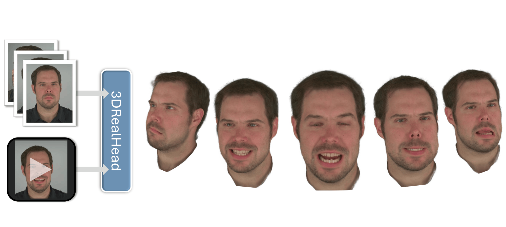
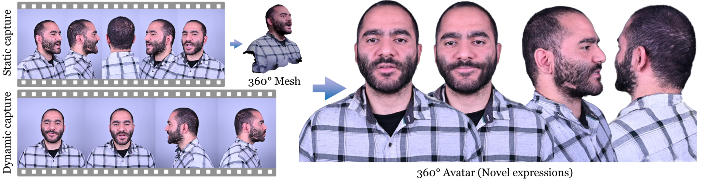
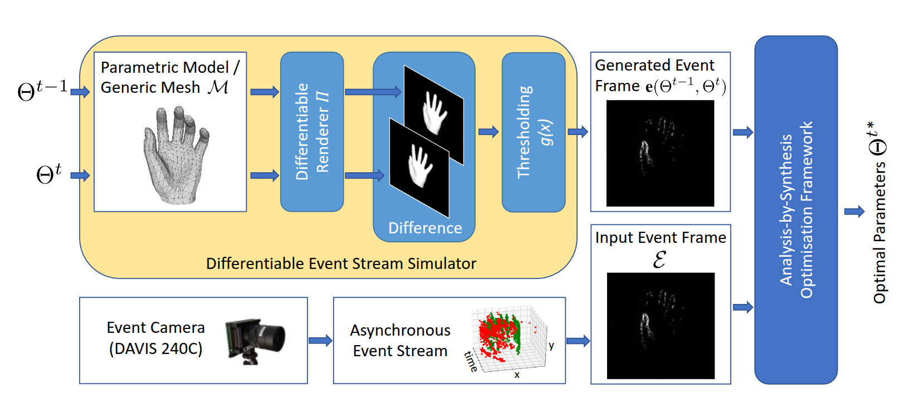

Researcher · 3D Vision · Graphics
Jalees Nehvi
I develop learning-based methods for photorealistic 3D head avatars, facial reconstruction, and neural rendering, with a focus on preserving identity and expression from sparse, consumer-level inputs.
representation: 3D Gaussians
input: sparse multi-view RGB
input: sparse multi-view RGB
Selected work
Research
My work sits at the intersection of computer vision, graphics, and machine learning. I build 3D head representations that preserve facial identity and expression while reducing capture complexity.


CVPR Workshop 2021
Differentiable Event Stream Simulator for Non-Rigid 3D Tracking
The first differentiable simulator of asynchronous event streams, enabling analysis-by-synthesis tracking of deformable 3D objects without large training datasets.
Background
About
I am a final-year PhD candidate in Computer Science at TU Darmstadt, supervised by Prof. Justus Thies. My research explores accessible capture, reconstruction, and controllable animation of photorealistic 3D human heads.
Research interests
I am interested in representations and learning systems for identity-faithful, expressive 3D head avatars, especially few-view reconstruction, 3D Gaussian Splatting, neural rendering, and robust facial tracking and animation.
Path
- PhD/Doctoral Researcher · TU Darmstadt3D Graphics & Vision Group · 2024–present
- PhD/Doctoral Researcher · MPI-IS3D Graphics & Vision Group · 2021–2024
- MSc · Saarland UniversityComputer Science · 2018–2021
Contact details
Contact
Darmstadt, Germany · Available for research and industry roles